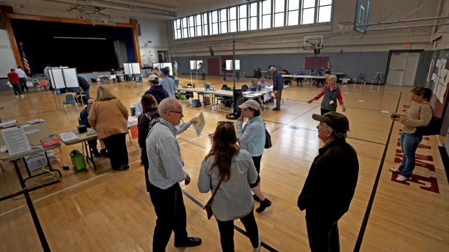
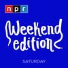

01

马萨诸塞州选民在选举日的投票照片
Photos: Mass. voters at the polls on Election Day
这里展示了选民在投票地点的长队、投票箱和家庭的场景。
Here is a glimpse at long lines, ballot boxes, and families at polling places.
原始报道 / Original source ↗DAILY NEWS · 每日新闻简报
Independent AI-assisted summaries of linked reports. Headlines, dates and source URLs are supplied by NewsAPI; summaries are not independent verification of full articles. Please read original reports for details.

Photos: Mass. voters at the polls on Election Day
这里展示了选民在投票地点的长队、投票箱和家庭的场景。
Here is a glimpse at long lines, ballot boxes, and families at polling places.
原始报道 / Original source ↗2026 live midterm election results: U.S. Senate in Alaska
现任参议员丹·苏利文面临民主党玛丽·佩尔托拉的挑战。
Incumbent Sen. Dan S. Sullivan, a Republican, is being challenged by Democrat Mary Peltola.
原始报道 / Original source ↗
2026 live election results: Mass. Ballot Question 7, the ‘starter homes’ measure
选举之夜的投票结果正在统计中。
Follow along below as votes are counted on election night.
原始报道 / Original source ↗
Massachusetts REALTORS Charitable Foundation Awards $27,000 in Grants to 18 Local Nonprofits
波士顿的女性午餐地点是获得资助的组织之一，支持解决住房、饥饿和无家可归问题。
Boston’s Women’s Lunch Place among the recipients of funding supporting organizations addressing housing, hunger and homelessness across Massachusetts.
原始报道 / Original source ↗布伦特原油与WTI美国原油最新市场行情。
Brent and WTI crude oil market quotations.
价格及更新时间以行情提供方为准。

Back in the majority, Democrats have plans for a long list of Trump investigations
民主党将有能力传唤记录并强迫个人作证。
Democrats will have the ability to subpoena records and compel individuals to testify.
原始报道 / Original source ↗
Euro zone inflation hits 4% for first time in three years as interest rate hike looms
这主要是由于能源通胀在十月份飙升超过20%。
It was driven by energy inflation, which surged above 20% in October.
原始报道 / Original source ↗
Stock market after midterm elections: What S&P 500 history shows
历史上，中期选举通常预示着标准普尔500强劲的一年。
Midterms historically precede a strong year for the S&P 500.
原始报道 / Original source ↗
Death toll hits 29 after Russian strike on Ukrainian aid site, with 48 still missing
俄罗斯发射了289架攻击无人机、17枚弹道导弹和59枚巡航导弹。
Russia launched 289 attack drones, 17 ballistic missiles and 59 cruise missiles across nine regions.
原始报道 / Original source ↗
Crude oil prices fall for second day as market hopes for diplomatic resolution to Iran war
在美国和伊朗总统表示愿意寻求外交解决方案后，油价反弹。
The rebound in oil prices come a day after the U.S. and Iranian presidents signalled they are open to a diplomatic solution to Iran war.
原始报道 / Original source ↗Israel’s President Could Play Key Role in Breaking Post-Election Deadlock
以色列总统艾萨克·赫尔佐格在其主要是礼仪性的角色中努力避免争议。
President Isaac Herzog has tried to avoid controversy and heal rifts in his largely ceremonial role.
原始报道 / Original source ↗
Supreme Court leans toward LGBTQ exclusion for publicly funded Catholic preschools
最高法院听取了关于科罗拉多州普及学前教育计划的辩论。
The Supreme Court heard arguments Tuesday about Colorado's universal pre-K program.
原始报道 / Original source ↗
Midterm elections are coming to a close as voters pass judgment on Trump's second term
中期选举将作为对特朗普第二任期的公投即将结束。
Midterm elections that will serve as a referendum on President Donald Trump’s second term are coming to a close.
原始报道 / Original source ↗